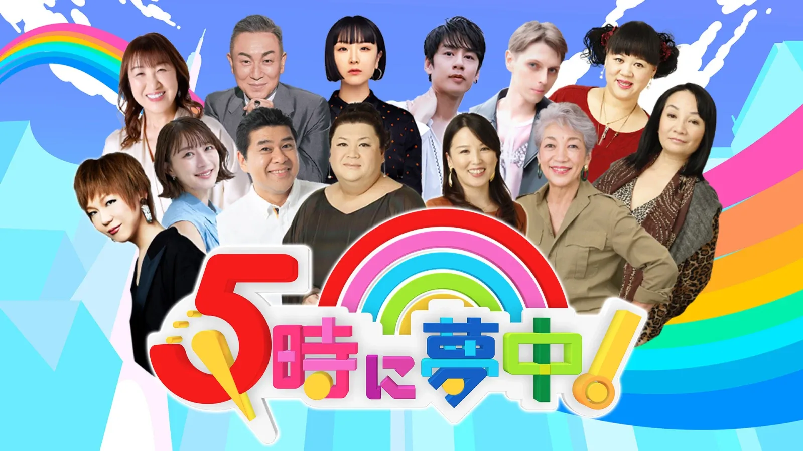
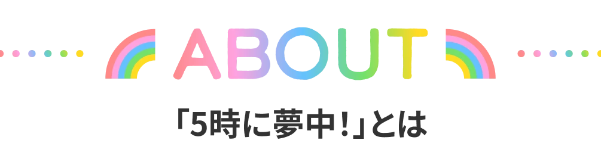
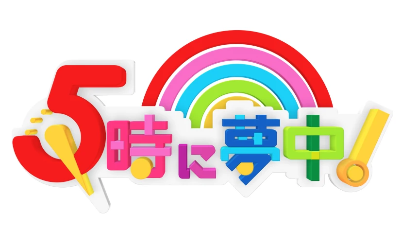
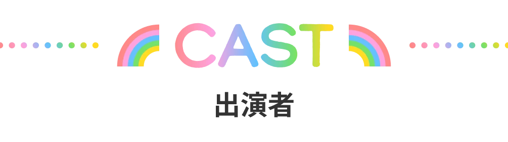
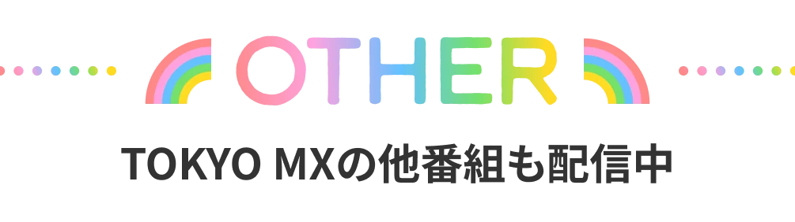
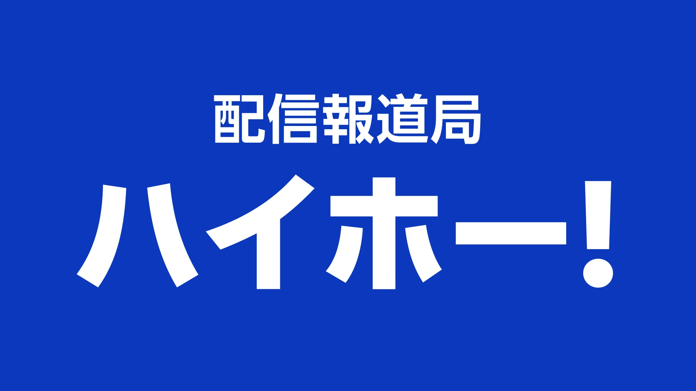

- CH108 TOKYO MX
- 毎週 月〜金 17:00〜配信
5時に夢中!
TOKYO MXの人気番組『5時に夢中！』をRチャンネルで生配信！
スマホでもPCでも無料でご視聴いただけます。



TOKYO MXで毎週月～金曜17時から生放送の
長年愛され続けている人気長寿番組
『5時に夢中！』は、TOKYO MXで毎週月～金曜17時から生放送されている、三面記事から政治まで幅広いテーマを個性豊かなコメンテーターたちが本音むき出しで語り尽くす大人の情報ワイドショーで、2005年4月の放送開始以来、長年愛され続けている人気長寿番組。
Rチャンネル CH 108で生配信 毎週 月〜金曜 17:00〜放送
『5時に夢中！』の新着ニュースを見るなら
”TOKYO MX+(プラス)”
TOKYO MXが発信するメディアサイト「TOKYO MX＋」。
MXの最新情報、最新のエンタメ情報、番組情報、出演者・ゲスト情報などTOKYO MXに関するオリジナル情報を毎日配信！




※予定変更の場合あり。
※CMが映像上に挿入されますがご了承ください。
Wake Up 7
月～金曜 7:00～7:30
TOKYO MX NEWS
月～金曜 11:00～・13:00～・15:00～

配信報道局 ハイホー！
火・金曜 12:00～12:30 ／
再配信 14:00～※・16:00～・18:00～
※「都知事定例会見」放送時は休止
堀潤 Live Junction
月～金曜 19:57～20:57
都知事定例会見
金曜 13:59～14:30
激論サミット
随時配信
Wake Up 7
土・日曜 12:55～・17:55～
- CH108 TOKYO MX
- 毎週 月〜金 17:00〜配信
5時に夢中!
TOKYO MXの人気番組『5時に夢中！』をRチャンネルで生配信！
スマホでもPCでも無料でご視聴いただけます。
コメンテーター
月曜 コメンテーター
若林史江
月曜 コメンテーター
マツコ・デラックス
火曜 コメンテーター
北斗晶
火曜 コメンテーター
岩下尚史
火曜 コメンテーター
トキ
(黒船特派員)
水曜 コメンテーター
松田ゆう姫
水曜 コメンテーター
中丸雄一
水曜 コメンテーター
小原プラス
木曜 コメンテーター
中瀬ゆかり
木曜 コメンテーター
岩井志麻子
木曜 コメンテーター
ジョナサン
(黒船特派員)
金曜 コメンテーター
中尾ミエ
金曜 コメンテーター
ケント
(こども黒船特派員)